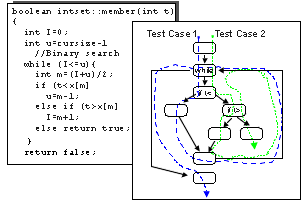
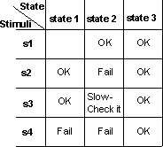

| Рекомендация: Проект тестирования |
 |
|
| Связанные элементы |
|---|
ОбъяснениеЯсное понимание пожеланий пользователя по работе программного обеспечения позволяет наилучшим образом спроектировать программное обеспечение для пользователя. Тестовые наборы отражают требования, которые необходимо проверить. Собственно проверка требований может выполняться другим способом и другими людьми. Например, проверка работоспособности и производительности программного обеспечения может быть выполнена в автоматизированных тестах, проверка последовательности выключения системы может быть выполнена вручную, а исследования продаж и рынка (в том, что относится к продукту) можно выполнить, сравнив продажи продукта и его конкурирующих продуктов. Поскольку часто невозможно проверить все требования, или это не входит в ваши обязанности, то важно сосредоточить усилия на проверке наиболее значимых требований для тестирования. Выбор таких требований осуществляется на основе баланса стоимости, риска и необходимости проверки требования. Создание тестового набора важно по нескольким причинам.
Тестовые наборы часто создаются на основе типа теста или требования для теста и могут заметно отличаться друг от друга. Рекомендуется для каждого тестируемого требования предусмотреть не меньше двух тестовых наборов:
Создание тестового набора для полнофункционального тестированияПолнофункциональное тестирование требует, чтобы были протестированы как внутренняя структура объекта, так и его функции. Тестирование внутренней структуры требует знания реализации объекта, и тесты, основанные на этом знании, называются тестированием методом прозрачного ящика. Тестирование функций объекта в основном относится к его наблюдаемому поведению безотносительно знания его реализации. Такие тесты называются тестами методом черного ящика. Ниже описано, как можно создавать тесты, используя оба эти метода. Тестирование методом прозрачного ящикаВ идеале следует протестировать все возможные пути кода. Однако достижение этой цели возможно разве что для самых простых объектов. Хотя бы по одному разу должны быть пройдены все пути принятых решений, в результате чего все операторы будут выполнены. Решение обычно обозначается условным оператором, и путь принятого решения - это путь между двумя решениями. Для достижения такого уровня полноты теста рекомендуется так подобрать тестовые данные, чтобы все решения оценивались со всеми возможными вариантами. Для этого тестовые наборы должны удовлетворять следующим условиям:
Для поиска кода, не охваченного методом черного ящика, используйте инструменты оценки полноты охвата кода. Тестирование надежности должно проводиться одновременно с тестированием методом прозрачного ящика. Пример: Предположим, что мы выполняем структурный тест функции member класса Set of Integers. Тест, выполняемый с помощью бинарного поиска, проверяет, входит ли в набор заданное целое число.  Функция и соответствующая блок-схема. Пунктирные стрелки показывают, как два тестовые набора позволяют проверить, что все операторы выполняются хотя бы один раз.
Теоретически полный тест операции предполагает, что тестовый набор должен пройти все сочетания путей в коде. В функции
member есть три пути в цикле while. Тестовый набор может пройти цикл несколько раз или ни одного раза.
Если цикл не проходится в тестовом наборе, то в коде будет только один путь. Если цикл проходится один раз, то - три
пути. Если два раза - то шесть путей и т.д. Таким образом, полное число путей будет 1+3+6+12+24+48+..., то есть слишком
большое число сочетаний, которым невозможно управлять. Поэтому необходимо ограничиться подмножеством всех путей. В этом
примере два тестовые набора позволяют проверить, что все операторы выполняются хотя бы один раз. В одном из тестовых
наборов можно задать За дополнительной информацией обратитесь к разделу Методика: полнофункциональное тестирование. Тестирование методом черного ящикаНазначением тестирования методом черного ящика является проверка наблюдаемого поведения объекта без раскрытия деталей реализации. Тесты методом черного ящика изучают отклик объекта на входные данные. Методика эквивалентных наборов позволяет сократить требуемое число тестов. Для каждой операции следует выделить эквивалентные наборы аргументов и состояний объекта. Эквивалентный набор - это набор значений, с которыми объект ведет себя похожим образом. Например, множество имеет три класса эквивалентности: пустое, часть элементов, полное. Для поиска кода, не охваченного методом черного ящика, используйте инструменты оценки полноты охвата кода. Тестирование надежности должно проводиться одновременно с тестированием методом черного ящика. В следующих разделах описано, как выделить тестовые наборы, выбрав тестовые данные для конкретных аргументов. Тестовые наборы, основанные на входных аргументахВходной аргумент - это аргумент, применяемый для операции. Следует создать тестовые наборы на основе входных параметров для каждой операции, для каждого из следующих входных условий:
Помните о том, что состояние объекта должно рассматриваться как входной аргумент. Например, для тестирования операции добавления элемента в множество, необходимо протестировать операцию добавить со значениями из всех классов эквивалентности множества, то есть для полного множества, множества с частью элементов и пустого множества. Тестовые наборы, основанные на выходных аргументахВыходной аргумент - это аргумент, который изменяет операция. Аргумент может быть одновременно входным и выходным. Выберите входные параметры так, что на выходе будут получаться следующие варианты.
Помните о том, что состояние объекта должно рассматриваться как выходной аргумент. Например, для операции удаления из списка необходимо выбрать входные значения так, чтобы список был полным, имел несколько элементов и был пустым после выполнения операции. Если объект работает по-разному в зависимости от состояния, в котором он находится, то следует использовать таблицу состояний, подобную показанной на рисунке.  Таблица состояния для тестирования. Она позволяет протестировать все сочетания состояний и воздействий. За дополнительной информацией обратитесь к разделу Методика: полнофункциональное тестирование. |
© Copyright IBM Corp. 1987, 2006. Все права защищены.. |